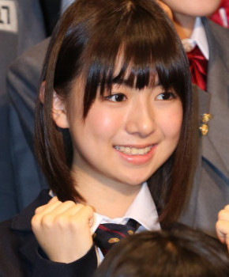

サカミチ
サカミチ鈴木泉帆すずきみずほ

現在のアー写
欅坂46 1期生 ・ 卒業・活動終了
センター曲：0曲（シングル表題曲センター：0曲） フォーメーション/歌唱参加：0曲
ライブ記録：センター 0公演・出演記録のある公演 0公演
ブログ記事：0件
学年：2000年度（同級生 全8人を見る）
推しに登録すると、トップページに「推しの新着」（最新のブログ）が出ます。

現在のアー写
欅坂46 1期生 ・ 卒業・活動終了
センター曲：0曲（シングル表題曲センター：0曲） フォーメーション/歌唱参加：0曲
ライブ記録：センター 0公演・出演記録のある公演 0公演
ブログ記事：0件
学年：2000年度（同級生 全8人を見る）
推しに登録すると、トップページに「推しの新着」（最新のブログ）が出ます。